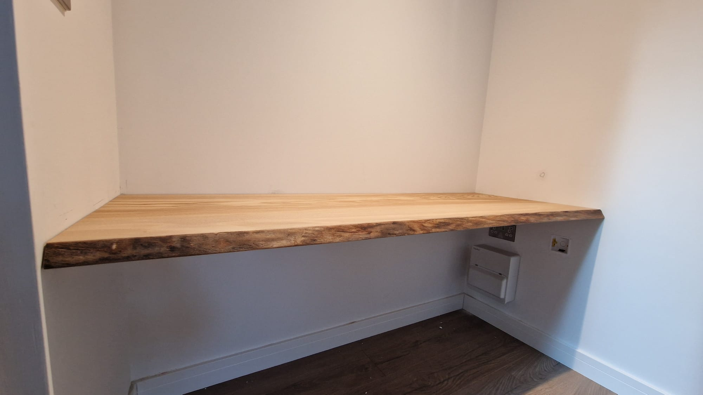
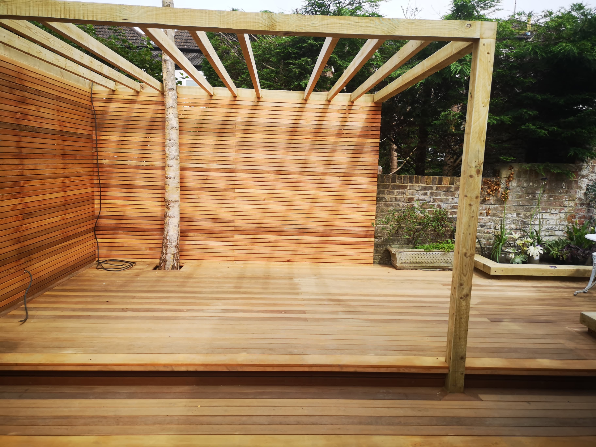
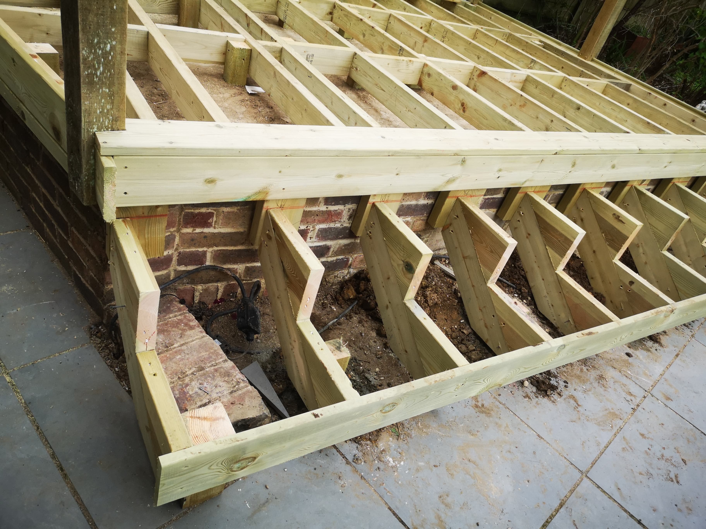

Brighton Carpenters: Custom Carpentry and First Fix by ARC Sussex Carpentry
At ARC Sussex Carpentry, we believe your home should be an expression of you. As your trusted carpenter in Brighton, we specialise in custom renovations that transform any space into something personal, practical, and beautiful. Whether it's reworking a single room, redesigning your entire layout, or creating standout garden features, we bring skill, experience, and Brighton know-how to every project.
We're proud to be local to Brighton but work right across Worthing, Crawley and Haywards Heath, and throughout Sussex, delivering reliable, high-quality renovations for all kinds of homes—from Regency townhouses to modern builds and countryside cottages.
Call us today to discuss your Custom Renovation

CUSTOM GARDEN RENOVATIONS
Create a garden space made for you
From practical garden improvements to standout bespoke features, our carpentry can help transform outdoor spaces into areas you can genuinely use and enjoy.

First Fix Carpentry and Bespoke Garden Features
We can build the structural and practical elements that help make a renovation work beautifully, from first fix carpentry through to bespoke timber features and finishing details.


Coastal Weather Conditions
Because Brighton sits adjacent to the water, carpenters have to consider salty air, blustery wind gusts, and rapid weather shifts. Coastal storms can cause timber to deteriorate more quickly, resulting in increased repairs and the need for robust building techniques. Projects may require treated timber or finishes that stand up well to moisture. A deck constructed here requires more than quality wood—it requires intelligent design to help keep rot and rust at bay.
Weather can also change quickly. Rain delays are inevitable and strong winds can make larger jobs more difficult. We work with local suppliers to source materials suited to the conditions and keep our approach flexible when the weather changes. For carpenters in Brighton, understanding the local environment is part of building work that lasts.
Let's Create Your Perfect Space
Whether you want to redesign your kitchen, open up your living area, transform your bathroom, or reinvent your garden, ARC Sussex Carpentry is your go-to carpenter in Brighton for custom renovations. We bring your ideas to life with local knowledge, master craftsmanship, and a commitment to making your home the best it can be.
Ready to talk about your renovation? Get in touch with ARC Sussex Carpentry today for a friendly chat and a free, no-obligation consultation. Let's create something truly special—made for you, your home, and your life.
Contact us today for a free quote or consultation
Get your bespoke renovation project started with us today!
We are here to realise your perfect home transformation
Book A Free Consultation